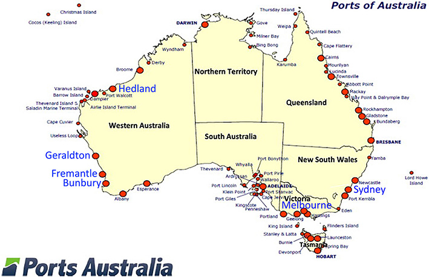

Land Cover and Land Use Change at Fremantle Ports, 1987-2020
Land Change of Ports in Australia, 1986-2020
Please click the blue words on the map to find the timelapse of port land changes.

The port map is sourced from:
Chen, P. S. L., Pateman, H., & Sakalayen, Q. (2017). The latest trend in Australian port privatisation: Drivers, processes and impacts. Research in Transportation Business & Management, 22, 201-213.